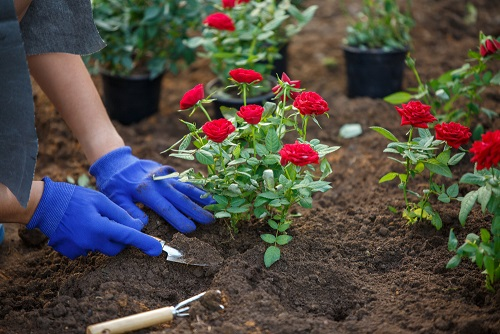

Planter des fleurs

Qu'est-ce que c'est ?
Nulla at dui in urna ultricies mattis. Proin sagittis arcu neque, a vehicula ipsum ultricies ac. Phasellus fringilla finibus sem. Pellentesque habitant morbi tristique senectus et netus et malesuada fames ac turpis egestas. Praesent enim libero, luctus non viverra eu, ultrices at eros. Donec a orci orci.
Les étapes
- Tremper les oignons ou les racines dans un seau d'eau claire quelques minutes,
- Pendant ce temps, préparer un trou de volume plus large que les racines ou l'oignon pour recevoir la plante,
- Mélanger un peu de terreau, de terre excavée et de composte dans votre brouette
- Placer votre oignon ou votre plante dans le trou, bien droit,
- Ajouter votre mélange de la brouette autour des racines ou de l'oignon,
- Arroser généreusement.
Bonus : jouer lui une petite musique pour lui souhaiter la bienvenue chez vous.